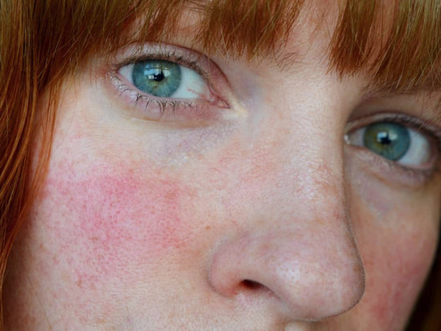
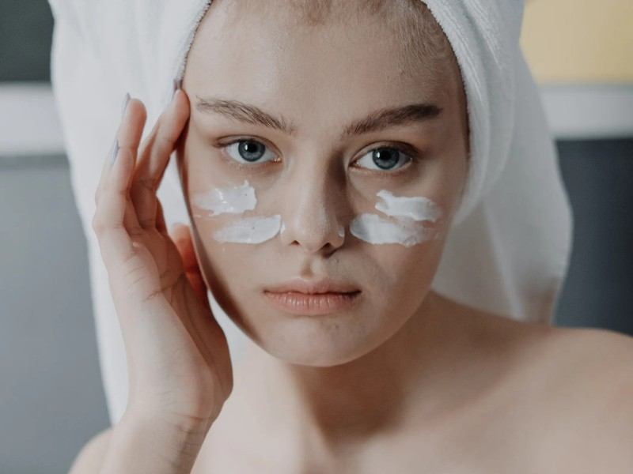
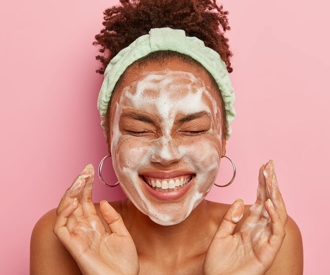

El Skincare es el cuidado que le damos a nuestra piel para mantenerla saludable. Se asocia con las rutinas que seguimos y los productos que usamos para que la piel de nuestro rostro luzca fresca y sana.
Alrededor del cuidado de la piel existe infinidad de información, mitos y realidades que pueden influir en tu decisión de compra de productos. Te ayudamos a tomar las mejores decisiones en esta GUÍA COMPLETA de Skin Care, aquí encontrarás todo lo que tienes que saber acerca del cuidado de la piel.
Tipos de piel
Por más sorprendente que parezca, muchos no conocen su tipo de piel, lo que ocasiona que no se tomen las medidas de cuidado correcto y se termine por dañar aún más este órgano. La pregunta será entonces, ¿cómo puedo saber qué tipo de piel tengo?
Piel normal:
Si tienes pocos granos, poros pequeños y tu piel no suele irritarse ni enrojecerse es probable que tengas una piel normal. Este tipo de piel suele ser equilibrada, no es demasiado seca ni muy grasa, y no tiene manchas.
Dado que tu piel es suave y resistente, acepta la mayoría de los principios activos que se usan en los productos de cuidado para la piel, por lo que comprar productos de belleza será pan comido para ti. No obstante, es importante que te protejas de los daños que causan los rayos UV usando a diario un filtro solar y que mantengas bajo control el nivel de estrés o la dieta si aparece algún grano
Piel grasa:
Las pieles grasas se caracterizan por tener poros grandes, sensación grasa a lo largo del día y con imperfecciones. Si bien es cierto que este tipo de piel puede ser un poco más difícil de cuidar, también tarda más en mostrar los signos del envejecimiento. ¡Eso es una buena noticia!
En las personas que tienen piel grasa, las glándulas sebáceas trabajan horas extras y cuando el exceso de grasa se mezcla con la suciedad y las células muertas de la piel, comienzan a formarse granos. Las investigaciones indican que entre el 40 y 55% de los adultos tienen la piel grasa y sufren acné tardío.
Si usas ingredientes antibacterianos que equilibren la cantidad de grasa podrás mantener bajo control estos problemas y evitar los brotes. Un error común que cometen las personas con piel grasa, y que exacerba sus problemas, es la limpieza excesiva. Debes evitar usar demasiados productos y respetar tu rutina de limpieza diaria.
Piel mixta:
Si tienes una sensación grasienta en la zona T, pero el resto del rostro es equilibrado tienes lo que se conoce como piel mixta. En este tipo de piel la grasa se suele acumular en la zona T, compuesta por la frente, la nariz y la barbilla, pero en el resto del rostro tiene una apariencia normal. Dado que las glándulas sebáceas trabajan horas extras en la zona T, es esperable que sientas las mejillas secas. La combinación de grasa y descamación puede ocasionar brotes y puntos negros de vez en cuando. El uso regular de un limpiador suave y un humectante ligero hará que tu piel luzca más limpia y saludable.
Piel seca:
¿Sientes tu piel tensa, áspera o escamosa? ¡Podrías tener un tipo de piel seca! La piel seca retiene menos humedad que la piel normal y las glándulas sebáceas segregan menos grasa, lo cual provoca descamación y la aparición de líneas de expresión. Aunque estas características suelen hacer que la piel luzca apagada y envejecida, la buena noticia es que existen soluciones muy sencillas para la sequedad.
Los aceites, cremas y bálsamos faciales hidratantes son eficaces para conferir más volumen a la piel si los utilizas dos veces al día. También puedes usar un exfoliante suave una vez a la semana para eliminar la acumulación de células muertas y dejar que la piel más joven y fresca que se encuentra debajo reluzca.
Piel sensible:
La piel sensible se caracteriza por estar roja, irritada o tener bultos. Aunque todos los tipos de piel pueden reaccionar mal a diferentes principios activos o factores ambientales, la piel sensible se ruboriza con extrema facilidad y suele enrojecerse tras usar determinados productos para el cuidado de la piel. Este tipo de piel también tiende a ser más delgada, tiene poros más pequeños y suele ser más seca.
Los limpiadores fuertes, el alcohol y las fragancias irritan la piel sensible. Si tienes este tipo de piel, opta por productos dermatológicos con una acción suave y relajante, como los productos ultra suaves y sin perfume.
Rosacea

La rosácea es una afección común de la piel que causa rubor o enrojecimiento y vasos sanguíneos visibles en la cara.La causa de la rosácea es desconocida, pero podría deberse a un sistema inmunitario hiperactivo, a un factor hereditario, a factores del entorno o a una combinación de estos. La rosácea no se desarrolla por una mala higiene y no es contagiosa.
Los brotes pueden desencadenarse por lo siguiente:
Bebidas calientes y comidas picantes
Vino tinto y otras bebidas alcohólicas
Temperaturas extremas
Sol o viento
Emociones
Ejercicio
Medicamentos que dilatan los vasos sanguíneos, incluidos algunos medicamentos para la presión arterial
Algunos productos cosméticos, para cuidados de la piel o del cabello
¿Qué cuidados extra podemos tener? ¿Qué alivios podemos darle a nuestra piel?
Los productos con ácido hialurónico son nuestros amigos. Atrapan la humectación en nuestra piel. Yo me hago mascarillas coreanas una vez por semana, o cuando estoy muy brotada, porque tienen alta concentración de AH y me ayudan mucho.
Las cremas con caléndula alivian mucho la rojez. Inviertan en una. (Just tiene una muy buena y no es muy cara)
Nuestra piel es muy sensible, evitemos productos con alcohol, parabenos, sulfatos, fragancias y exfoliantes de arrastre.
Importantísimo que tomemos mucha agua y usemos protector solar todo el año.
Hay tratamientos como Dermapen, Hifu y otros más que mejoran un poco, pero salen bastante caros. En dos semanas voy a probar uno y les cuento si mejora.
Rutina de dia

Aunque una rutina básica puede componerse solo de limpieza, hidratación y protección del sol, nos extendemos en todos los pasos para que cada una elija a qué atenerse según sus gustos, necesidades y, por supuesto, tiempo.
LIMPIEZA. Nos atreveríamos a decir que aquí no hay dudas, es el primer paso universal. Pero... ¿y si queremos experimentar una doble limpieza, tan común en las asiáticas, por ejemplo? En ese caso primero hay que desmaquillar la piel con toallitas, leche, bálsamo o agua micelar y después, tras retirar el producto elegido (o no hacerlo, el agua micelar por ejemplo no se aclara), se prosigue con un gel o aceite limpiador, para una limpieza más en profundidad.
EXFOLIACIÓN. ¡Ojo! Normalmente no se realiza a diario, sino de una a tres veces por semana según sea la piel, más o menos sensible. pero el día que se realiza, después de la limpieza y antes del...
TÓNICO. Este producto, que es líquido como el agua, cierra los poros y equilibra el pH cutáneo. Desde hace ya un lustro, cuando empezó a instalarse en nuestro país llegado de Japón y Corea, compite con las esencias, que funcionan como tónicos pero también tiene ingredientes activos tipo sérum (pueden utilizarse en lugar de uno y/u otro o incluirlo entre ellos en la rutina).
SÉRUM. Es un concentrado de principios activos que penetra en la piel con más facilidad. Por eso, sea del tipo que sea, como es más ligero que una crema, se aplica antes que esta.
CONTORNO DE OJOS y/o LABIOS. Al igual que el sérum, normalmente se presentan en fórmulas más ligeras que las cremas y con una concentración mayor de principios activos específicos. Así que también deberían extenderse antes de la crema hidratante o específica de tratamiento.
CREMA. Independientemente de si es hidratante, antiarrugas, reafirmante o antimanchas, sus fórmulas suelen ser las más densas de la balda de cosméticos que tenemos en el baño. Además de cumplir su función específica, también sellan los nutrientes que se han aplicado antes de esta última. Si tienes la piel muy seca, o en invierno, cuando necesita protegerse ante el frío, se puede usar un aceite antes de la crema: el primero hidrata y la segunda sella la nutrición.
PROTECCIÓN SOLAR, DE DÍA. La crema de tratamiento puede incluir protección contra los rayos UV en forma de spf. Pero, en caso contrario, hay que aplicar un protector específico. Para entornos urbanos y en el día a día, si no se va a la playa, las fórmulas más habituales son ligeros velos incoloros que se aplican como último paso de la rutina de belleza.
Rutina de noche

Los buenos hábitos nocturnos resultan en una buena piel. Sigue estos cinco pasos de cuidado de la piel de noche con el fin de prepararla para el proceso de rejuvenecimiento nocturno:
LIMPIEZA: Tanto si necesitas retirar el maquillaje como si solo quieres eliminar la suciedad, las impurezas, la grasa y la contaminación que se depositan en la piel durante el día, la limpieza es uno de los pasos más importantes de tu rutina de cuidado de la piel de noche. Puedes utilizar toallitas faciales si prefieres las soluciones rápidas y sencillas, o bien optar por una limpieza más profunda y elegir un limpiador oleoso seguido de un limpiador suave y cremoso. Consejo experto: Después de la limpieza, pasa un disco de algodón seco por el rostro para comprobar que has eliminado toda la suciedad. Este paso es fundamental, ya que todos los productos de cuidado de la piel que utilices después se absorberán mejor y más fácilmente si la piel está limpia.
TONICO: El tónico tonifica y prepara la piel para absorber los ingredientes esenciales que se aplicarán a continuación. Si vas a añadir Retinol a tu rutina, utiliza un tónico hidratante.
CONTORNO DE OJOS: Las cremas para el contorno de ojos suelen ser más ligeras que la mayoría de los tratamientos hidratantes y se aplican en la zona de debajo de los ojos. Se recomienda aplicar primero la crema más ligera en la rutina facial de noche, por eso debes utilizar el contorno en este paso. Para la noche, elige una crema hidratante para el contorno de ojos que contribuya a reparar la barrera de la piel mientras duermes.
SERUM: Los sérums ofrecen concentraciones elevadas de determinados tratamientos. Los sérums más populares están formulados con ingredientes como el Ácido Hialurónico, que hidrata la piel, o nutrientes y antioxidantes, como la Vitamina C o E. Encuentra el más adecuado para las necesidades de tu piel y utilízalo en este paso. Consejo experto: Sigue las indicaciones sobre la frecuencia de uso de tu sérum y sobre los activos con los que puedes combinarlo.
CREMA: Llega el momento de otro paso esencial en la rutina del cuidado de la piel: el tratamiento hidratante. Por la noche, tu piel entra en modo de reparación, así que necesitas una crema específica que la nutra e hidrate. El Retinol es un ingrediente fantástico para ello, ya que deja la piel visiblemente más lisa y luminosa y reduce las líneas de expresión y las arrugas. Consejo experto: Existe un sinfín de recomendaciones sobre cómo aplicar Retinol y cuándo aplicarlo en la rutina.